Learning Goals
At the end of this Tutorial, you will be able to:
- Create layouts with CSS flexbox that display as two columns on laptop/desktop screens and as a single column on mobiles.
- Add a gutter between columns.
- Re-order how content within columns is displayed on mobile screens.
Introduction
In this portfolio project, with a flexbox-based, multi-column website for a fictitious smoothie outlet.
You can view how this web page will look at the end of this Tutorial by clicking the link below.
In later Tutorials, you will complete this portfolio project by adding menus and a header, email contact form and footer to it.
Portfolio project folders and files
Your first task is to download the files you need for this project.
- If a sub-folder named 📁 portfolio does not already exist inside your ‘main’ 📁 websites folder, create it now using all lower-case letters.

- Download the following compressed file to your computer: smoothies.zip
- Uncompress the ZIP file into your 📁 websites/portfolio sub-folder as shown below.

This will create a sub-folder named 📁 smoothies inside your 📁 portfolio folder.

The folders, sub-folders and files for your 'Smoothies' project will be as shown below.

You no longer need the downloaded smoothes.zip file. You can delete it from your 📁 websites/portfolio sub-folder.
The structure of your project web page
Display the project index.html web page in your web browser. It should look as shown below.
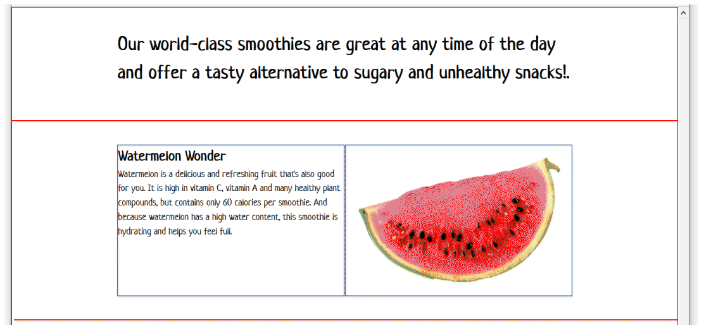In VS Code, you can see that the index.html web page is structured into five section blocks.
At the top is a section block containing a h2 heading that fills the full width of the web page.
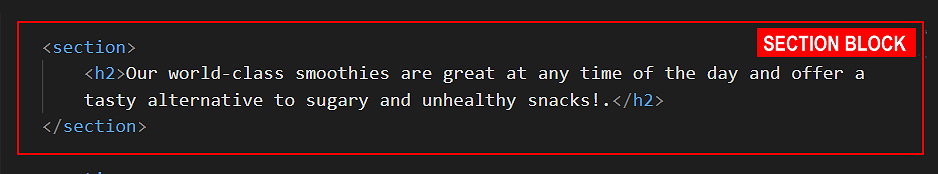Beneath that are four section blocks. Each contains a flexbox parent (class name container-flexbox) with two child items (class name col-2) inside them.
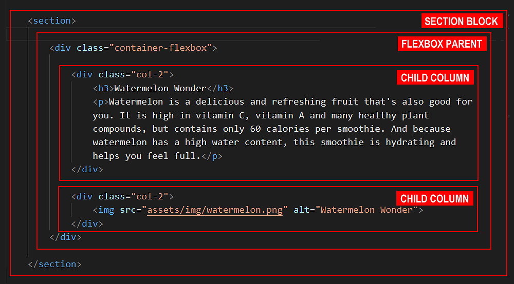This flexbox-based parent-child structure enables the design of a two-column layout for desktop/laptop (768px or wider) screens.
Visual layout guides
To help you distinguish between the various parent and child elements, the following two styles are added at the end to the head of the web page.
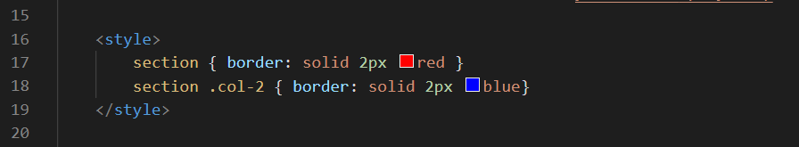You can remove these styles as you progress through the project.
Styling the introduction text
At the top of the index.html web page, you can see a section block containing text enclosed within a <h2> ... </h2> tag pair.
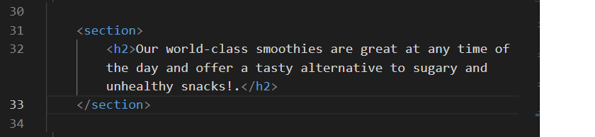- In VS Code, display the style.css file. The h2 selector has just one style rule applied to it. This rule applies a fixed font-size value of 48px to the introduction text. 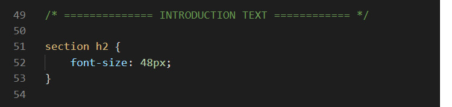
- Update the font-size property of the h2 selector to a fluid value using the typographic equation.
font-size: calc(26px + (48 - 26) * ((100vw - 320px) / (1600 - 320)));
- No color value has been set for the introduction text. As a result, the web browser displays the text in black (#000), the default text colour.
Add a new color property with a purple value.
color: #733fc0;
- By default, text in headings or paragraphs is aligned against the left edge of its container (text-align: left).
Add a new text-align property and value as follows.
text-align: center;
- Finally, for most web browsers, the default value of line-spacing is in the range 1.2 to 1.3. This is fine for one or even two lines text with only a few words.
For multiple lines of text, however, this spacing between lines needs to be increased to make the text more readable.
Add a new line-height property and value as follows.
line-height: 1.6;
The h2 selector and its declaration of style rules should now look as shown below. 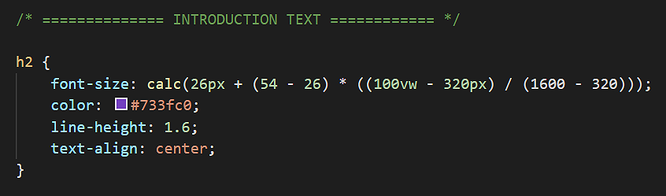 - Save your style.html file.
In your web browser, view the web page on desktop/laptop and mobile size screens. It should look as shown below.

Adding background colours to the sections
In the style.css stylesheet, you can see four selectors with style rules have been created for background-color values.

Let’s apply these background-color classes to your project web page.
- In VS Code, display the index.html file.
- Add the following four classes, one after the other, to the relevant section blocks for the four smoothies. 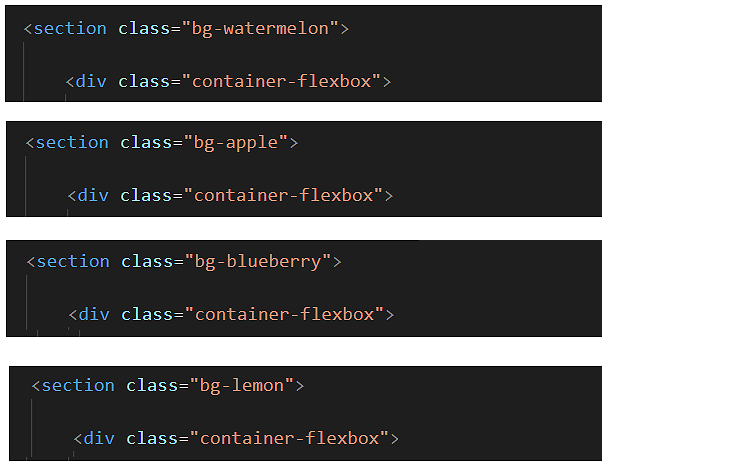
- Save your index.html file.
In your web browser, view the web page on desktop/laptop and mobile size screens. It should look as shown below.

Adding gutters to the two-column layout
On desktop/laptop screens, the two-column layout for each of the four smoothies has no gutter spacing between the left and right child items.
Let’s change this.
- In VS Code, display the style.css file.
- Within the desktop/laptop media query for the .col-2 class selector, reduce the width from 50% to 47% as shown below. 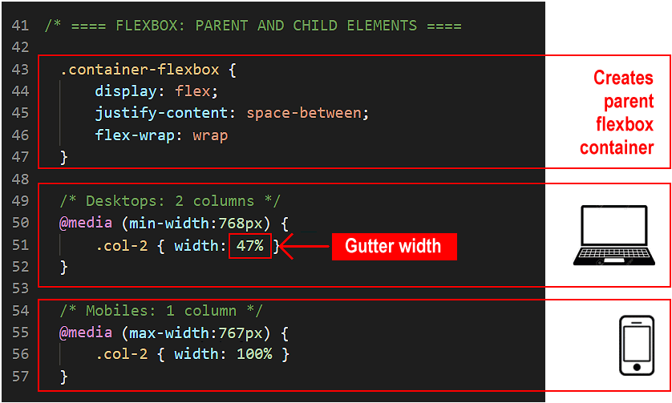 The remaining 6% of horizontal space will be added between the two child items, so creating a gutter between the left and right columns.
- Save your style.html file.
In your web browser, view the web page on desktop/laptop size screens. It should look as shown below.

The above changes apply only to desktop/laptop screens (768px or wider) and have no effect on mobile screens (767px or narrower).
On mobile screens, the col-2 child columns will always fill the full width (100%) of the parent flexbox container.
Updating styles inside the child columns
The next step is to update the styles of the h3 sub-headings and p text paragraphs within the col-2 child columns.
- In VS Code, display the style.css file.
- At the moment, these look as shown below.

- Update the style rules of the h3 sub-heading selector by copying-and-pasting the following.
font-size: calc(32px + (64 - 32) * ((100vw - 320px) / (1600 - 320))); color: #d1274b; letter-spacing: 2px; margin-bottom: 4px;
- Next, update the style rules of the p paragraph selector by copying-and-pasting the following.
font-size: calc(16px + (24 - 16) * ((100vw - 320px) / (1600 - 320))); color: #2F4F4F; letter-spacing: 1px; line-height: 1.6;
- The complete style rules for the h3 and p selectors should now look as shown below.

- Save your style.html file.
In your web browser, view the web page on desktop/laptop size screens. It should look as shown below.

Targeting the blueberry smoothie sub-heading and text
Of the four smoothies, the sub-heading and text of the blueberry one is difficult to read. You need to increase the colour contrast between the words and the purple background.
One option would be to change the text colours to white, for both the sub-heading and the text paragraph, as follows.
h3 { color: #fff; } p { color: #fff; }
Unfortunately, this causes the sub-headings and text of all four smoothies to be displayed in a white colour. This is not what you want.
What you want is your style.css stylesheet to ‘target’ the h3 and p elements of the blueberry smoothie so that only they are displayed in white.
In the index.html file, you can see that only the blueberry smoothie has a class name of bg-blueberry applied to its section block. None of the three other smoothies have this class name.
Therefore, in your CSS stylesheet, you can target the sub-heading and text paragraph within this block with the following parent-child selectors.
.bg-blueberry h3 { some property: some value; } .bg-blueberry p { some property: some value; }
Let’s do that now.
- In your style.css file, enter the following.
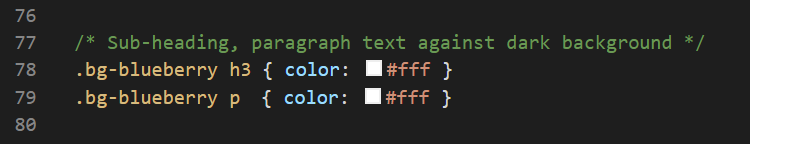
Or, in shorter form.

- Save your style.html file.
In your web browser, view the web page on desktop/laptop and mobile size screens. It should look as shown below.

Centre-aligning child elements on mobile screens
By default, headings and text paragraphs within web pages are aligned against the left edge of their containing element (text-align: left).
For mobile screens only, let’s centre-align the sub-headings and paragraphs for the four smoothies.
- In VS Code, display the style.css file.
- Under the new lines you added above to display the blueberry sub-heading and text in white, add a new comment and mobile media query as shown below. 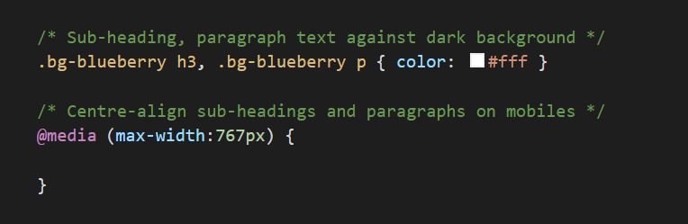
- Next, enter the text-align property with a center value for both the h3 and p selectors. 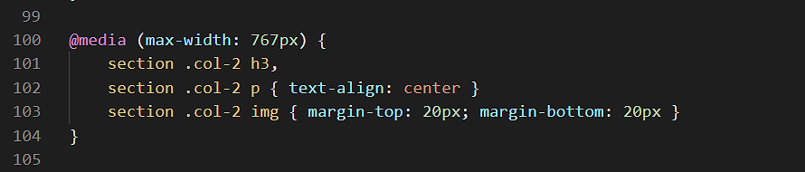 Also, add some margin spacing above and below the images on mobile screens.
- Save your style.html file.
In your web browser, view the web page on a mobile size screen. It should look as shown below.

Alternating child items horizontally on desktops/laptops
On desktop/laptop screens, for all four smoothies, the sub-heading and text are always positioned in the left column and the image in the right.
Follow the steps below to alternate how the two-column layouts for each of the four smoothies are displayed on screens of 768px width or above.

- In VS Code, display the index.html file.
- Within the second two-column flexbox container (for ‘Apple’ smoothies), change the order of the two child items as shown below. 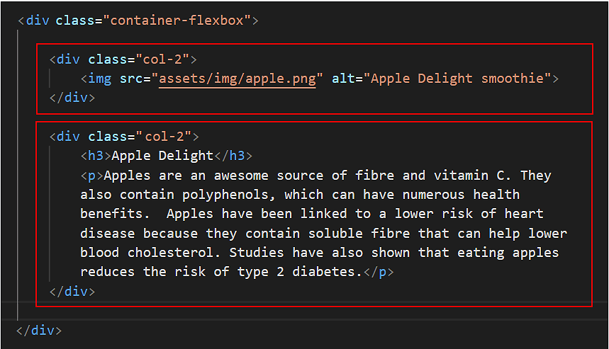 On desktop/laptop screens, this will position the apple image in the left column, and the text in the right column.
- Next, within the fourth two-column flexbox container (for 'Lemon' smoothies), change the order of the two child items as shown below. 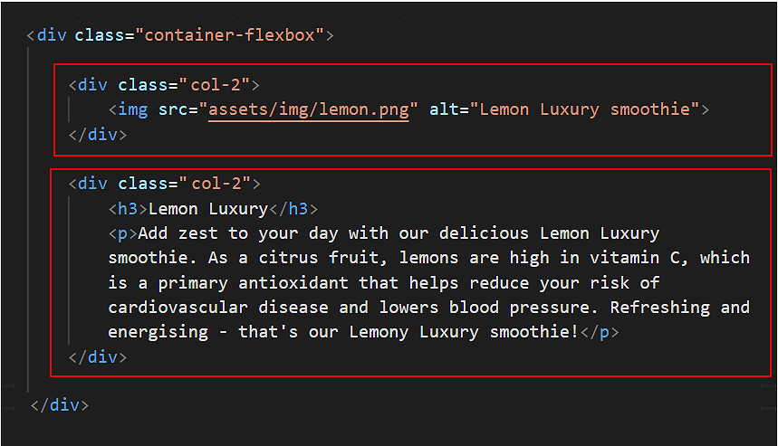 On desktop/laptop screens, this will position the lemon image in the left column, and the text in the right column.
Save the index.html file, and, in your web browser, view the effect on your web page on screen widths of 768px or greater.
Reordering child items vertically on mobile screens
In the previous section, you swapped the left-right positions of the images and text for two of the four smoothies: the second (Apple) smoothie) and the fourth (Lemon) smoothie.
On desktop/laptop screens, this introduced some variety to the visual layout of your web page.
Now, let's examine your web page layout on mobile-sized screens.
In visual content layout, the general standard is as follows: first the image, then heading and finally text. See the examples below.

If you display your web page on a mobile screen, you can see that:
- For the first (Watermelon) and third (Blueberry) smoothies, the sub-heading and text are displayed first, and then the image. This is not the visual effect you want.
- For the second (Apple) and fourth (Lemon) smoothies, the image is displayed first, and then the sub-heading and text. This is the visual effect you want.

Let’s change the first and third smoothie child items, so that for all four smoothies, the image is always displayed above the sub-heading and text.
- In VS Code, display the style.css stylesheet.
- The first pair of child columns you need edit each has a CSS class of col-2 and are inside a parent element with the bg-watermelon class.
So, to target these child elements in your CSS file, you would type the corresponding CSS selectors:
.bg-watermelon .col-2 { some property: some value; }
In this case, you want to target each of the two child elements individually. You can do this with the :nth-child(some number) selector. So you would type:.bg-watermelon .col-2:nth-child(1) { some property: some value; } .bg-watermelon .col-2:nth-child(2) { some property: some value; }
- The second pair of child elements you want to target have a parent with the bg-blueberry class. So, to target them, you would enter the following:
.bg-blueberry .col-2:nth-child(1) { some property: some value; } .bg-blueberry .col-2:nth-child(2) { some property: some value; }
- You want your changes to apply only on mobile screens. So you would include a media query as follows.
/* Mobiles: Re-order columns inside first and third flexbox parent containers */ @media (max-width: 767px) { .bg-watermelon .col-2:nth-child(1) { some property: some value; } .bg-watermelon .col-2:nth-child(2) { some property: some value; } .bg-blueberry .col-2:nth-child(1) { some property: some value; } .bg-blueberry .col-2:nth-child(2) { some property: some value; } }
- You are now ready to update the order in which the pair of col-2 child elements within the bg-watermelon and bg-lemon parents.
The CSS property that controls the order in which child elements of a parent element are displayed is called simply the order property.
Copy-and-paste the final code below.
/* Mobiles: Re-order columns inside first and third flexbox parent containers */ @media (max-width: 767px) { .bg-watermelon .col-2:nth-child(1) { order: 2; } .bg-watermelon .col-2:nth-child(2) { order: 1; } .bg-blueberry .col-2:nth-child(1) { order: 2; } .bg-blueberry .col-2:nth-child(2) { order: 1; } }
Save the style.css file, and, with your web browser sized for mobile screens, view the effect on your web page. It should look as shown below.
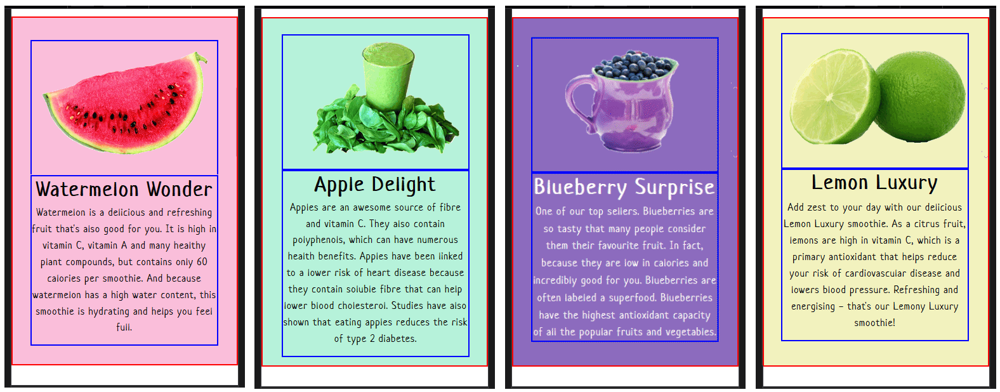You can now delete the ‘red box’ style rule from the head of the web page.
Alternatively, wrap it inside comment tags, just in case you want to reuse this visual guide again later. To do so, copy-and-paste the following lines over the current ‘red box’ style rule.
<!--
<style>
section { border: solid 2px red }
.col-2 { border: solid 2px blue }
</style>
-->
✅ You have now completed this Tutorial and the first part of your ‘Smoothie’ portfolio project.
Your project web page should look similar to the example at the link below.
Adding the hero block
Finally, follow the steps below to add a hero block at the top of the sample web page.
- Just after the opening body tag in the index.html file, copy-and-paste the following:
<!-- hero block --> <header class="hero-block text-center"> <div class="hero-text-container"> <h1 class="slide-in-top">Smooth Smoothies</h1> <h2 class="slide-in-top">Where flavour meets goodness</h2> </div> <div class="hero-bg-media"> <img src="assets/img/smoothie-hero-image.jpg" alt="sample background image"> </div> <div class="bg-overlay"></div> </header> <!-- </hero block>-->
- To the style.css stylesheet, co;py-and-paste the following:
/* Horizontal spacing: Desktops */ @media (min-width: 768px) { .hero-text-container { padding: 0 7% 3% 7% } } /* Horizontal spacing: Mobiles */ @media (max-width: 767px) { .hero-text-container { padding: 0 12% 5% 12% } } .hero-block { min-height: 540px; position: relative; display: flex; flex-direction: column; justify-content: center; background-color: gray; overflow: none; } @media (min-width: 768px) { .hero-block { height: 80vh } } .hero-text-container { padding: 0 12% 4% 12%; z-index: 2 } .hero-bg-media { position: absolute; top: 0; right: 0; bottom: 0; left: 0; z-index: 0; } .hero-bg-media img { object-fit: cover; width: 100%; height: 100%; } .bg-overlay { position: absolute; top: 0; right: 0; bottom: 0; left: 0; z-index: 1; background-image: linear-gradient(rgba(0,0,0,0.6),rgba(0,0,0,0.2)); } .hero-block h1, .hero-block h2 { line-height: 1.2; color:#fff; text-shadow: 2px 2px #222; } .hero-block h1 { font-size: calc(58px + (132 - 58) * ((100vw - 320px)/(1600 - 320))); margin-bottom: 24px; } .hero-block h2 { font-size: calc(26px + (64 - 26) * ((100vw - 320px)/(1600 - 320))); } /* ---------------------------------------------- * Generated by Animista on 2020-7-30 7:28:59 * Licensed under FreeBSD License. * See http://animista.net/license for more info. * w: http://animista.net, t: @cssanimista * ---------------------------------------------- */ /** * ---------------------------------------- * animation slide-in-top * ---------------------------------------- */ @-webkit-keyframes slide-in-top { 0% { -webkit-transform: translateY(-1000px); transform: translateY(-1000px); opacity: 0; } 100% { -webkit-transform: translateY(0); transform: translateY(0); opacity: 1; } } @keyframes slide-in-top { 0% { -webkit-transform: translateY(-1000px); transform: translateY(-1000px); opacity: 0; } 100% { -webkit-transform: translateY(0); transform: translateY(0); opacity: 1; } } .slide-in-top { -webkit-animation: slide-in-top 1s cubic-bezier(0.250, 0.460, 0.450, 0.940) both; animation: slide-in-top 1s cubic-bezier(0.250, 0.460, 0.450, 0.940) both; } .slide-in-left { -webkit-animation: slide-in-left 0.5s cubic-bezier(0.250, 0.460, 0.450, 0.940) both; animation: slide-in-left 0.5s cubic-bezier(0.250, 0.460, 0.450, 0.940) both; } /* ---------------------------------------------- * Generated by Animista on 2020-7-29 19:38:33 * Licensed under FreeBSD License. * See http://animista.net/license for more info. * w: http://animista.net, t: @cssanimista * ---------------------------------------------- */ /** * ---------------------------------------- * animation slide-in-left * ---------------------------------------- */ @-webkit-keyframes slide-in-left { 0% { -webkit-transform: translateX(-1000px); transform: translateX(-1000px); opacity: 0; } 100% { -webkit-transform: translateX(0); transform: translateX(0); opacity: 1; } } @keyframes slide-in-left { 0% { -webkit-transform: translateX(-1000px); transform: translateX(-1000px); opacity: 0; } 100% { -webkit-transform: translateX(0); transform: translateX(0); opacity: 1; } } /* ================ UTILITY CLASSES ============= */ .text-center { text-align: center } - When finished, save both the web page and the stylesheet file.
Uploading your files to GitHub
After finishing your web page and stylesheet, you are now ready to upload them to your account on GitHub.
- Open a new tab in your web browser and go to GitHub.com. If you are not already signed in to your GitHub account, sign in now.

- On your GitHub home page, click the ‘repo’ that holds your web pages. Its name will look as follows, where username is your chosen username on GitHub.
username.github.io

- On the next GitHub screen displayed, near the right of the screen, you can see a button named Add file. Click on it.

- From the dropdown list displayed, choose the option Upload files.

- In File Explorer (Windows 10) or Finder (Apple Mac), drag-and-drop your entire 📁 portfolio sub-folder to upload it to your repository on GitHub.

- Scroll down to the bottom of the GitHub screen, and accept or edit the short message (Add files via upload) in the Commit changes box.
- Finally, click the green Commit changes button to upload your files.

Your portfolio project web page is now published on GitHub at a web address similar to the following:
https://username.github.io/portfolio/smoothies/index.html
or simply:
https://username.github.io/portfolio/smoothies
It may take a few minutes for your uploaded files to appear on GitHub.